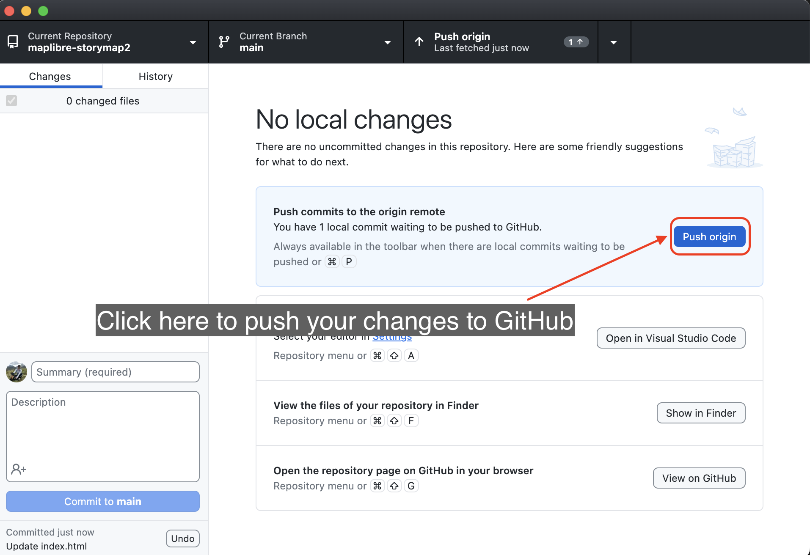

Implementar tu mapa narrativo como página web
Ahora que tu mapa narrativo está terminado, es hora de implementarlo como una página web. Para eso utilizaremos GitHub Pages.
GitHub Pages es un servicio de alojamiento de sitios estáticos que toma archivos HTML, CSS y JavaScript directamente desde un repositorio en GitHub, opcionalmente procesa los archivos a través de un proceso de construcción, y publica un sitio web.
Para publicar tu mapa como una página web, sigue estos pasos:
Paso 1
Ve a la nube de GitHub e inicia sesión en tu cuenta.
Puedes hacer clic en el botón View on GitHub en tu aplicación GitHub Desktop para abrir el repositorio en tu navegador.
Paso 2
En tu repositorio, haz clic en el botón Settings en la barra de menú superior.

Paso 3
Si no lo hiciste antes, tendrás que hacer tu repositorio público para poder usar GitHub Pages.
Simplemente haz clic en el botón General en el panel de la izquierda.

Desplázate hasta la parte inferior de la página y haz clic en Change visibility y luego en Change to public.

Confirma que deseas hacer público el repositorio.

Es posible que se te pida que ingreses la contraseña de tu cuenta para confirmar.
Paso 4
En la Configuración del repositorio, haz clic en el botón Pages en las opciones del panel izquierdo.

Paso 5
En la configuración de Pages, haz clic en el menú desplegable bajo el título Branch y selecciona la opción de rama main.

Luego haz clic en Save. Un mensaje como el que se muestra a continuación aparecerá en la pantalla.
Paso 6
Espera unos segundos y luego actualiza la página.
Una nueva sección aparecerá en la ventana de configuración de Pages con los detalles de tu página implementada.
Haz clic en el botón Visit site para abrir el mapa narrativo en una nueva ventana del navegador.

Cada vez que cambies algo en tu archivo config.js o agregues algo a tu repositorio, GitHub Pages construirá los archivos de renderizado e implementará la nueva versión de tu mapa. Lo único que tienes que hacer es commit tus cambios y push los cambios a la nube si estás usando GitHub Desktop.
